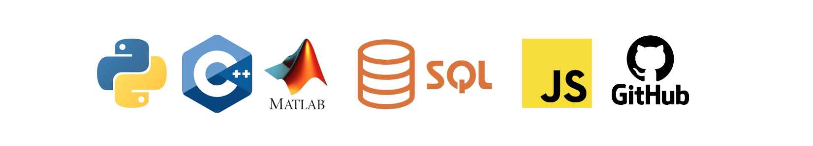

Programming Experience
Summary
I have over eight years of programming experience, primarily using Python to develop engineering simulation tools and data analysis workflows. My programming work has supported projects across vibrational analysis, renewable energy modelling, structural analysis, and computer vision applications.
Alongside Python, I have used MATLAB and Simulink for dynamic system modelling, controller design, and digital twin development for mechanical and hydraulic systems. I also have experience with C++ especially within Arduino-based embedded control projects. I have done several full-stack developmen projects using JavaScript, SQL, HTML, and CSS to create secure, real-time web applications. Across these projects, I have focused on writing efficient, well-structured, and maintainable code to support data-driven engineering decision making.
In addition, I have developed strong version control and collaborative software development practices through the use of Git and GitHub across multiple team-based engineering projects. This includes managing feature branches, resolving merge conflicts, maintaining clear documentation, and coordinating contributions within multidisciplinary teams to support reliable and efficient project development.